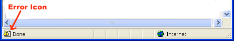
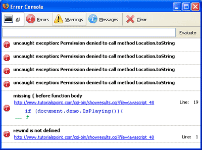

Every now and then, developers commit mistakes while coding. A mistake in a program or a script is referred to as a bug.
The process of finding and fixing bugs is called debugging and is a normal part of the development process. This section covers tools and techniques that can help you with debugging tasks..
The most basic way to track down errors is by turning on error information in your browser. By default, Internet Explorer shows an error icon in the status bar when an error occurs on the page.

Double-clicking this icon takes you to a dialog box showing information about the specific error that occurred.
Since this icon is easy to overlook, Internet Explorer gives you the option to automatically show the Error dialog box whenever an error occurs.
To enable this option, select Tools → Internet Options → Advanced tab.and then finally check the "Display a Notification About Every Script Error" box option as shown below −
Other browsers like Firefox, Netscape, and Mozilla send error messages to a special window called the JavaScript Console or Error Consol. To view the console, select Tools → Error Consol or Web Development.
Unfortunately, since these browsers give no visual indication when an error occurs, you must keep the Console open and watch for errors as your script executes.

Error notifications that show up on Console or through Internet Explorer dialog boxes are the result of both syntax and runtime errors. These error notification include the line number at which the error occurred.
If you are using Firefox, then you can click on the error available in the error console to go to the exact line in the script having error.
There are various ways to debug your JavaScript −
One way to check your JavaScript code for strange bugs is to run it through a program that checks it to make sure it is valid and that it follows the official syntax rules of the language. These programs are called validating parsersor just validators for short, and often come with commercial HTML and JavaScript editors.
The most convenient validator for JavaScript is Douglas Crockford's JavaScript Lint, which is available for free at Douglas Crockford's JavaScript Lint.
Simply visit that web page, paste your JavaScript (Only JavaScript) code into the text area provided, and click the jslint button. This program will parse through your JavaScript code, ensuring that all the variable and function definitions follow the correct syntax. It will also check JavaScript statements, such as if and while, to ensure they too follow the correct format
You can use the alert() or document.write() methods in your program to debug your code. For example, you might write something as follows −
var debugging = true; var whichImage = "widget"; if( debugging ) alert( "Calls swapImage() with argument: " + whichImage ); var swapStatus = swapImage( whichImage ); if( debugging ) alert( "Exits swapImage() with swapStatus=" + swapStatus );
By examining the content and order of the alert() as they appear, you can examine the health of your program very easily.
A debugger is an application that places all aspects of script execution under the control of the programmer. Debuggers provide fine-grained control over the state of the script through an interface that allows you to examine and set values as well as control the flow of execution.
Once a script has been loaded into a debugger, it can be run one line at a time or instructed to halt at certain breakpoints. Once execution is halted, the programmer can examine the state of the script and its variables in order to determine if something is amiss. You can also watch variables for changes in their values.
The latest version of the Mozilla JavaScript Debugger (code-named Venkman) for both Mozilla and Netscape browsers can be downloaded at http://www.hacksrus.com/~ginda/venkman
You can keep the following tips in mind to reduce the number of errors in your scripts and simplify the debugging process −
Use plenty of comments. Comments enable you to explain why you wrote the script the way you did and to explain particularly difficult sections of code.
Always use indentation to make your code easy to read. Indenting statements also makes it easier for you to match up beginning and ending tags, curly braces, and other HTML and script elements.
Write modular code. Whenever possible, group your statements into functions. Functions let you group related statements, and test and reuse portions of code with minimal effort.
Be consistent in the way you name your variables and functions. Try using names that are long enough to be meaningful and that describe the contents of the variable or the purpose of the function.
Use consistent syntax when naming variables and functions. In other words, keep them all lowercase or all uppercase; if you prefer Camel-Back notation, use it consistently.
Test long scripts in a modular fashion. In other words, do not try to write the entire script before testing any portion of it. Write a piece and get it to work before adding the next portion of code.
Use descriptive variable and function names and avoid using single-character names.
Watch your quotation marks. Remember that quotation marks are used in pairs around strings and that both quotation marks must be of the same style (either single or double).
Watch your equal signs. You should not used a single = for comparison purpose.
Declare variables explicitly using the var keyword.